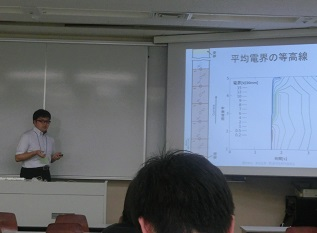

2015年3月卒生アルバム
卒業式：日野キャンパス（2015.3.24)
卒業式の謝恩会のスナップ。学位記を手渡しされました。

芝浦工大・工学院大・明星大・サレジオ高専 合同卒研中間発表会
明星大学で大学・高専の電力工学をご専門の先生有志とその卒研生を対象に、卒研中間発表会を行いました（2014.11.22）
電気学会 東京支部カンファレンス 学生研究発表会 2014.9.1
電気学会の主催する経験の浅い学生のための研究発表会に伊庭研の４年生が参加しました。懇親会で電気学会会長、関西電力生駒副社長とも懇談させていただきました。

電気学会研究会・シンポジウム （沖縄宮古島） 2015.2.18,19
宮古島市島嶼型スマートコミュニティ実証事業のシンポジウムと電気学会の研究会が宮古島で開催されました。学生も参加して論文を発表し、スマートグリッド実証を現地で見学しました。学生たちは余暇に南国の海も楽しみました。